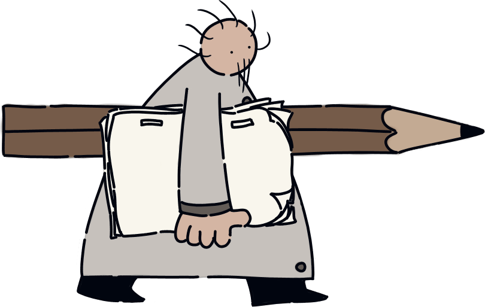
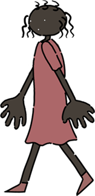
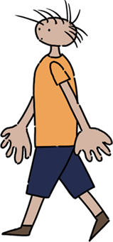
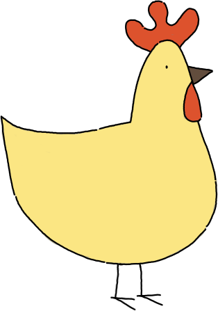
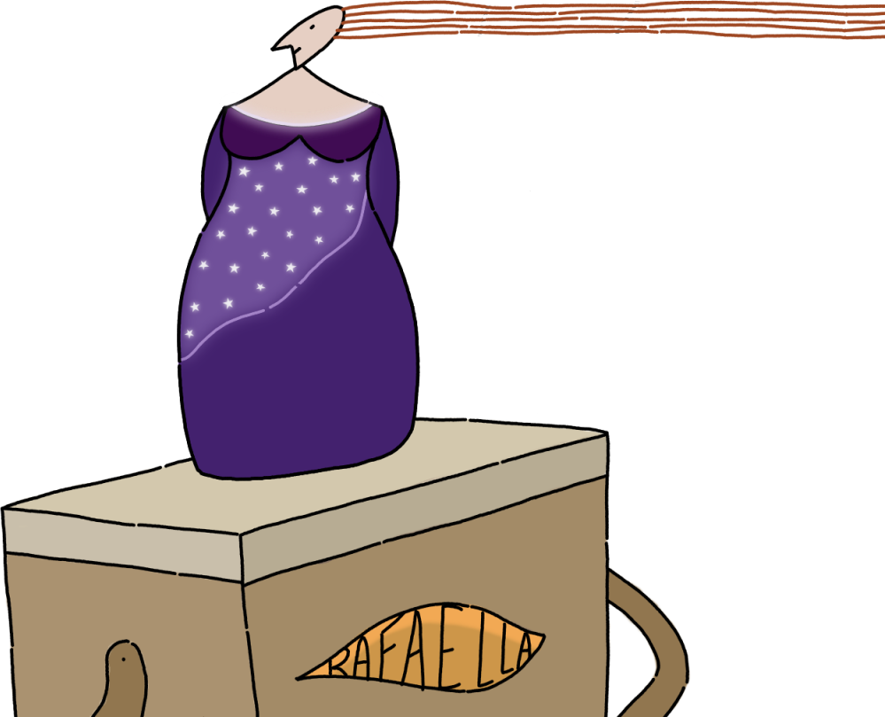
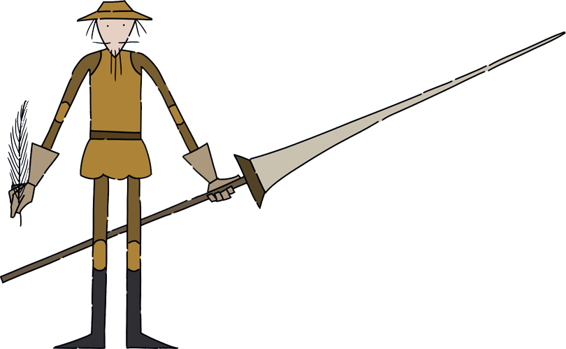
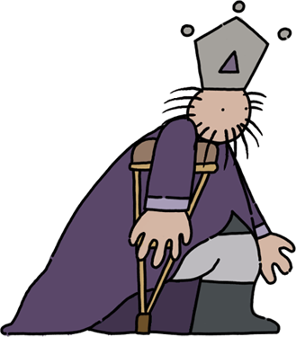
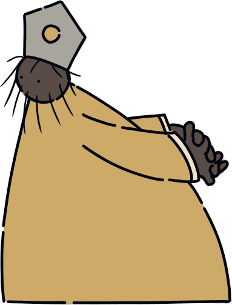
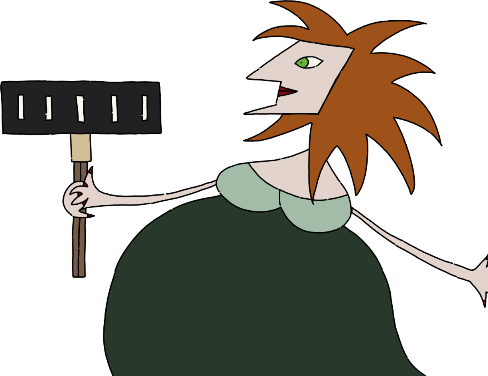

Como um desenho animado aprende a andar? O que acontece quando
uma personagem é criada sem um coração? O que animar primeiro: um ovo ou
uma galinha?
“A dúvida é sempre o princípio de tudo” – diz Doutor K, protagonista
do longa-metragem “História Antes de uma História”, produzido pelo
Núcleo de Cinema de Animação de Campinas, com roteiro e direção de
Wilson Lazaretti. Em sua jornada, a personagem parte da
inquietação criativa ao encontro dos instrumentos e conhecimentos
necessários para desenvolver suas ideias e sua linguagem através dos
desenhos animados.
O filme mostra a criação de um novo universo, de um menino e uma
menina inspirados pelas formas da maçã e da jabuticaba, que ao lado de
outras personagens acompanharão Doutor K numa sucessão de belas imagens
em movimento, dando forma à “História Antes de uma História”.
Personagens
-
Doutor K

-
Laurinha

-
Matias

-
Melodia

-
Cantora

-
Dom Quixote

-
Rei Velho

-
Reizinho

-
Feiticeira
